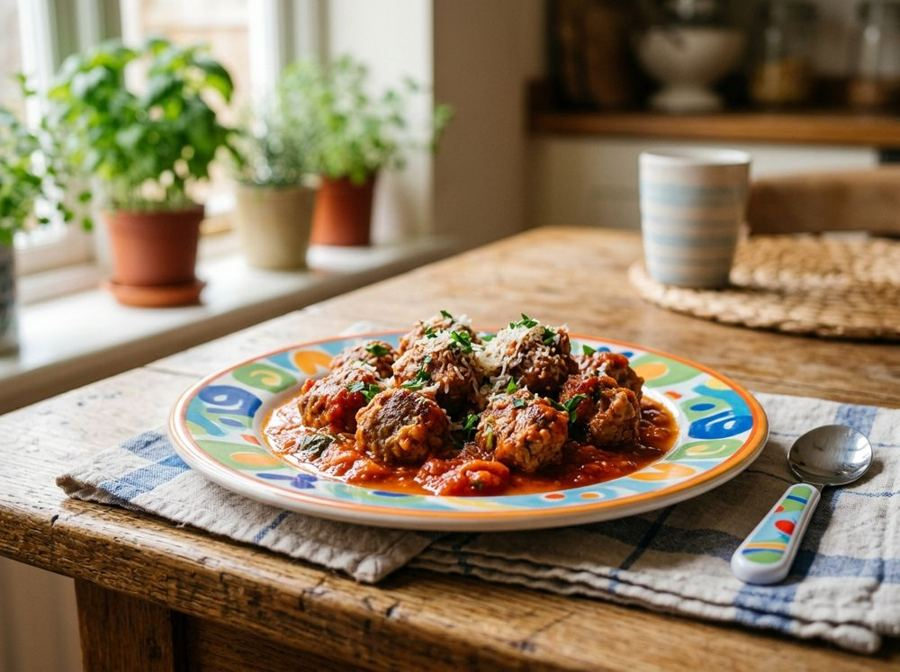

Polpettine al sugo
Kid-friendlyTender meat patties in a light tomato sauce.
Ingredients
- Ground beef (lean cut)250 g
- White bread (crumb)40 g
- Whole milk50 ml
- Parmigiano Reggiano DOP (aged 24 months)20 g
- Tomato puree300 ml
- Extra virgin olive oil10 g
- Small carrot20 g
- Celery10 g
- Yellow onion10 g
Allergens
Gluten, Milk, Celery
Method
- Finely mince the carrot, celery, and onion until they form a very fine texture.
- In a bowl, soak the breadcrumbs in milk for about 5 minutes until fully absorbed.
- Lightly squeeze the bread and combine it in a bowl with the ground beef and grated Parmigiano Reggiano.
- Mix the ingredients by hand until you achieve a smooth and soft consistency.
- Form small meatballs about 2 cm in diameter (approximately 15-18g each).
- In a non-stick pan, sauté the minced vegetables with olive oil and two tablespoons of water over low heat for 5 minutes.
- Add the tomato puree and bring to a gentle simmer.
- Carefully place the meatballs into the sauce, cover with a lid, and cook over low heat for 20 minutes.
- Turn the meatballs halfway through cooking and add a tablespoon of hot water if the sauce becomes too thick.
- Ensure the center is fully cooked and let cool slightly before serving.
Nutrition facts (estimate)
| Per serving (145 g) | Per 100 g | |
|---|---|---|
| Energy | 772 kJ / 184 kcal | 532 kJ / 127 kcal |
| Protein | 16 g | 11 g |
| Carbohydrates | 8.5 g | 5.9 g |
| of which sugars | 3.8 g | 2.6 g |
| Fat | 9.2 g | 6.3 g |
| of which saturates | 3.8 g | 2.6 g |
| Fibre | 1.4 g | 1.0 g |
| Salt | 0.3 g | 0.21 g |
AI estimates based on average CREA / USDA data: indicative only, not a substitute for medical or dietitian advice.
Open the recipe in the app for the shopping list, ingredient sheets and nearby shops.
Get it on Google Play